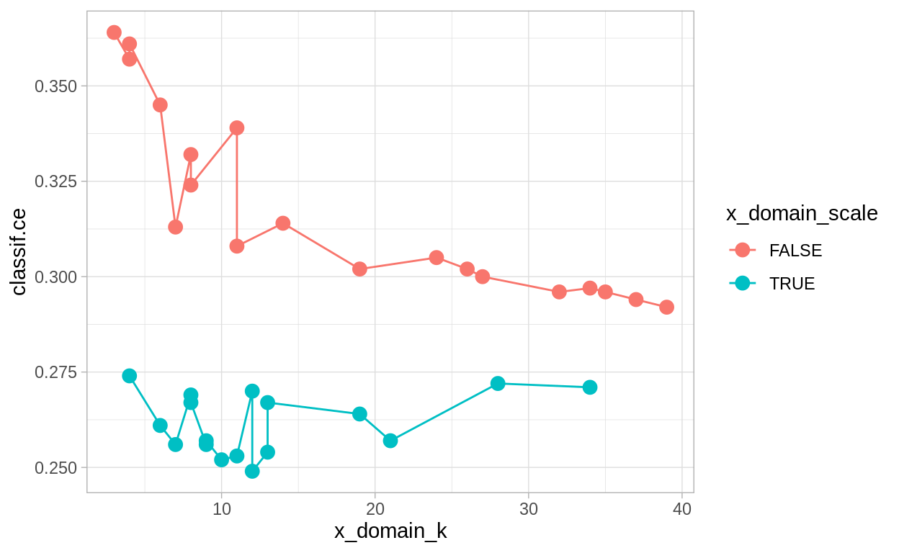
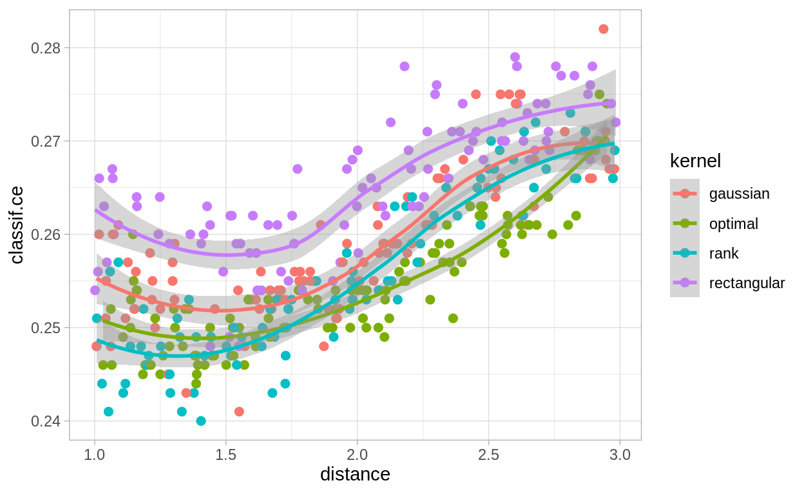

Intro
This is the second part of a serial of tutorials. The other parts of this series can be found here:
We will continue working with the German credit dataset. In Part I, we peeked into the dataset by using and comparing some learners with their default parameters. We will now see how to:
- Tune hyperparameters for a given problem
- Perform nested resampling
Prerequisites
First, load the packages we are going to use:
We use the same Task as in Part I:
task = tsk("german_credit")
We also might want to use multiple cores to reduce long run times of tuning runs.
# future::plan("multiprocess") # uncomment for parallelization
Evaluation
We will evaluate all hyperparameter configurations using 10-fold CV. We use a fixed train-test split, i.e.the same splits for each evaluation. Otherwise, some evaluation could get unusually hard splits, which would make comparisons unfair.
set.seed(8008135)
cv10_instance = rsmp("cv", folds = 10)
# fix the train-test splits using the $instantiate() method
cv10_instance$instantiate(task)
# have a look at the test set instances per fold
cv10_instance$instance
row_id fold
1: 5 1
2: 20 1
3: 28 1
4: 35 1
5: 37 1
---
996: 936 10
997: 950 10
998: 963 10
999: 985 10
1000: 994 10Simple Parameter Tuning
Parameter tuning in mlr3 needs two packages:
- The paradox package is used for the search space definition of the hyperparameters
- The mlr3tuning package is used for tuning the hyperparameters
Search Space and Problem Definition
First, we need to decide what Learner we want to optimize. We will use LearnerClassifKKNN, the kernelized k-nearest neighbor classifier. We will use kknn as a normal kNN without weighting first (i.e., using the rectangular kernel):
knn = lrn("classif.kknn", predict_type = "prob")
knn$param_set$values$kernel = "rectangular"
As a next step, we decide what parameters we optimize over. Before that, though, we are interested in the parameter set on which we could tune:
knn$param_set
<ParamSet>
id class lower upper
1: k ParamInt 1 Inf
2: distance ParamDbl 0 Inf
3: kernel ParamFct NA NA
4: scale ParamLgl NA NA
5: ykernel ParamUty NA NA
levels default
1: 7
2: 2
3: rectangular,triangular,epanechnikov,biweight,triweight,cos,... optimal
4: TRUE,FALSE TRUE
5:
value
1:
2:
3: rectangular
4:
5: We first tune the k parameter (i.e.the number of nearest neighbors), between 3 to 20. Second, we tune the distance function, allowing L1 and L2 distances. To do so, we use the paradox package to define a search space (see the online vignette for a more complete introduction.
As a next step, we define a TuningInstanceSingleCrit that represents the problem we are trying to optimize.
instance_grid = TuningInstanceSingleCrit$new(
task = task,
learner = knn,
resampling = cv10_instance,
measure = msr("classif.ce"),
search_space = search_space,
terminator = trm("none")
)
Grid Search
After having set up a tuning instance, we can start tuning. Before that, we need a tuning strategy, though. A simple tuning method is to try all possible combinations of parameters: Grid Search. While it is very intuitive and simple, it is inefficient if the search space is large. For this simple use case, it suffices, though. We get the grid_search tuner via:
Tuning works by calling $optimize(). Note that the tuning procedure modifies our tuning instance (as usual for R6 class objects). The result can be found in the instance object. Before tuning it is empty:
instance_grid$result
NULLNow, we tune:
tuner_grid$optimize(instance_grid)
k distance learner_param_vals x_domain classif.ce
1: 9 2 <list[3]> <list[2]> 0.25The result is returned by $optimize() together with its performance. It can be also accessed with the $result slot:
instance_grid$result
k distance learner_param_vals x_domain classif.ce
1: 9 2 <list[3]> <list[2]> 0.25We can also look at the Archive of evaluated configurations:
instance_grid$archive$data()
k distance classif.ce uhash x_domain
1: 3 1 0.271 0e4da8b6-f895-4cb3-b66c-721748701b94 <list[2]>
2: 3 2 0.273 76e6c854-eb0c-42bf-84f1-064f68ca2f05 <list[2]>
3: 4 1 0.292 0e0a2872-4b6b-4710-956d-88c929798930 <list[2]>
4: 4 2 0.279 c5a40695-afb8-44c9-a157-b120302e32f3 <list[2]>
5: 5 1 0.271 ce4ad002-06d8-4690-a176-fd779d3859d1 <list[2]>
6: 5 2 0.274 58032795-555b-4de1-bb37-65356f2c15ca <list[2]>
7: 6 1 0.278 31978c7e-c27f-4859-80bb-552050bd5af4 <list[2]>
8: 6 2 0.273 b746f5e7-814a-4606-b8c2-0b61f4a837ca <list[2]>
9: 7 1 0.257 7fb0cca2-a23d-4afc-96c9-8461a34fb1ba <list[2]>
10: 7 2 0.258 4ac7d066-1517-40ac-9f0d-71a6c5c3d1d5 <list[2]>
11: 8 1 0.264 8720eaa2-c3b9-4e21-ac89-95150767dc7f <list[2]>
12: 8 2 0.256 53f85c13-504f-4637-bd56-447d4425ebb3 <list[2]>
13: 9 1 0.251 3fb3a9c8-d85c-474c-999e-02176f28fc20 <list[2]>
14: 9 2 0.250 b21e0ca2-8945-408d-baf2-289b98cf2a14 <list[2]>
15: 10 1 0.261 a5002a07-a826-43ad-8742-a73813b23c66 <list[2]>
16: 10 2 0.250 489bc446-5308-4650-b09f-197bbe552f8d <list[2]>
17: 11 1 0.256 4124013a-e4c7-4d96-9079-177f9c1ab558 <list[2]>
18: 11 2 0.254 a96da688-f339-429e-b9f4-8b4f8db30c16 <list[2]>
19: 12 1 0.260 1151257b-12cf-41c5-8753-baee238dafeb <list[2]>
20: 12 2 0.259 57003e31-d613-4050-a98d-ce066a63d34a <list[2]>
21: 13 1 0.268 5d6447a8-dbbd-4b93-a45d-46477d505f35 <list[2]>
22: 13 2 0.258 223ff8d1-7676-4458-9d40-90c8744352ec <list[2]>
23: 14 1 0.265 bcdf9f26-1b6f-4c7e-8fc1-776b1a064226 <list[2]>
24: 14 2 0.263 ad7079b6-3a60-4113-94e7-a282fabdecf5 <list[2]>
25: 15 1 0.268 44b8f9fd-3ffa-44dc-9526-9c6f09adf388 <list[2]>
26: 15 2 0.264 234d1feb-16ad-4fb5-b4e4-92656783c2f4 <list[2]>
27: 16 1 0.267 6fc5052c-8c7a-4405-8b73-bac3a44b39e9 <list[2]>
28: 16 2 0.262 ff83448a-6887-411b-bdca-467664ba98c5 <list[2]>
29: 17 1 0.264 1a8bc712-ffc7-4166-b114-84e9147f580b <list[2]>
30: 17 2 0.267 983d4b30-1835-4c95-b2f5-f4d0c097ad7f <list[2]>
31: 18 1 0.273 cfbae216-03c4-49af-bf3e-d7d659c92509 <list[2]>
32: 18 2 0.271 9818fe1a-5c5b-497a-b696-75cd83942500 <list[2]>
33: 19 1 0.269 1b226768-f4e7-4662-add7-d340a7bdfb8d <list[2]>
34: 19 2 0.269 57d8e769-af84-46dc-a666-7591a5530a37 <list[2]>
35: 20 1 0.268 3804d239-3e60-4253-bbf5-df3cfc8e0cd7 <list[2]>
36: 20 2 0.269 7da66450-dd71-4e70-805f-f73bb901fa06 <list[2]>
k distance classif.ce uhash x_domain
timestamp batch_nr
1: 2020-10-29 04:54:31 1
2: 2020-10-29 04:54:31 1
3: 2020-10-29 04:54:31 1
4: 2020-10-29 04:54:31 1
5: 2020-10-29 04:54:31 1
6: 2020-10-29 04:54:31 1
7: 2020-10-29 04:54:31 1
8: 2020-10-29 04:54:31 1
9: 2020-10-29 04:54:31 1
10: 2020-10-29 04:54:31 1
11: 2020-10-29 04:54:31 1
12: 2020-10-29 04:54:31 1
13: 2020-10-29 04:54:31 1
14: 2020-10-29 04:54:31 1
15: 2020-10-29 04:54:31 1
16: 2020-10-29 04:54:31 1
17: 2020-10-29 04:54:31 1
18: 2020-10-29 04:54:31 1
19: 2020-10-29 04:54:31 1
20: 2020-10-29 04:54:31 1
21: 2020-10-29 04:54:31 1
22: 2020-10-29 04:54:31 1
23: 2020-10-29 04:54:31 1
24: 2020-10-29 04:54:31 1
25: 2020-10-29 04:54:31 1
26: 2020-10-29 04:54:31 1
27: 2020-10-29 04:54:31 1
28: 2020-10-29 04:54:31 1
29: 2020-10-29 04:54:31 1
30: 2020-10-29 04:54:31 1
31: 2020-10-29 04:54:31 1
32: 2020-10-29 04:54:31 1
33: 2020-10-29 04:54:31 1
34: 2020-10-29 04:54:31 1
35: 2020-10-29 04:54:31 1
36: 2020-10-29 04:54:31 1
timestamp batch_nrWe plot the performances depending on the sampled k and distance:
ggplot(instance_grid$archive$data(), aes(x = k, y = classif.ce, color = as.factor(distance))) +
geom_line() + geom_point(size = 3)

On average, the Euclidean distance (distance = 2) seems to work better. However, there is much randomness introduced by the resampling instance. So you, the reader, may see a different result, when you run the experiment yourself and set a different random seed. For k, we find that values between 7 and 13 perform well.
Random Search and Transformation
Lets have a look at a larger search space. For example, we could tune all available parameters and limit k to large values (50). We also now tune the distance param continuously from 1 to 3 as a double and tune distance kernel and whether we scale the features.
We may find two problems when doing so:
First, the resulting difference in performance between k = 3 and k = 4 is probably larger than the difference between k = 49 and k = 50. While 4 is 33% larger than 3, 50 is only 2 percent larger than 49. To account for this we will use a transformation function for k and optimize in log-space. We define the range for k from log(3) to log(50) and exponentiate in the transformation. Now, as k has become a double instead of an int (in the search space, before transformation), we asp round it in the trafo.
large_searchspace = ParamSet$new(list(
ParamDbl$new("k", lower = log(3), upper = log(50)),
ParamDbl$new("distance", lower = 1, upper = 3),
ParamFct$new("kernel", c("rectangular", "gaussian", "rank", "optimal")),
ParamLgl$new("scale")
))
large_searchspace$trafo = function(x, param_set) {
x$k = round(exp(x$k))
x
}
The second problem is that grid search may (and often will) take a long time. For instance, trying out three different values for k, distance, kernel, and the two values for scale will take 54 evaluations. Because of this, we use a different search algorithm, namely the Random Search. We need to specify in the tuning instance a termination criterion. The criterion tells the search algorithm when to stop. Here, we will terminate after 36 evaluations:
tuner_random = tnr("random_search", batch_size = 36)
instance_random = TuningInstanceSingleCrit$new(
task = task,
learner = knn,
resampling = cv10_instance,
measure = msr("classif.ce"),
search_space = large_searchspace,
terminator = trm("evals", n_evals = 36)
)
tuner_random$optimize(instance_random)
k distance kernel scale learner_param_vals x_domain classif.ce
1: 2.444957 1.54052 optimal TRUE <list[4]> <list[4]> 0.249Like before, we can review the Archive. It includes the points before and after the transformation. The archive includes a column for each parameter the Tuner sampled on the search space (points before the transformation):
instance_random$archive$data()
k distance kernel scale classif.ce
1: 2.654531 2.921236 rectangular FALSE 0.314
2: 2.588931 1.869319 rank TRUE 0.254
3: 3.319396 2.425029 rectangular TRUE 0.272
4: 1.164253 1.799989 gaussian FALSE 0.364
5: 2.441256 1.650704 rank TRUE 0.253
6: 3.158912 2.514174 optimal FALSE 0.305
7: 3.047551 1.405385 gaussian TRUE 0.257
8: 2.442352 2.422242 gaussian TRUE 0.270
9: 3.521548 1.243384 rectangular TRUE 0.271
10: 2.331159 1.490977 optimal TRUE 0.252
11: 1.787328 1.286609 gaussian FALSE 0.345
12: 1.297461 1.479259 rank TRUE 0.274
13: 1.378451 1.117869 rectangular FALSE 0.357
14: 1.988414 2.284577 rectangular FALSE 0.313
15: 2.557743 2.752538 rank TRUE 0.267
16: 2.961104 2.557829 rank TRUE 0.264
17: 2.243193 2.594618 rectangular TRUE 0.256
18: 3.666907 1.910549 rectangular FALSE 0.292
19: 1.924639 1.820168 rank TRUE 0.256
20: 2.390153 2.621740 optimal FALSE 0.339
21: 2.033775 2.209867 rank FALSE 0.332
22: 2.929778 2.309448 rank FALSE 0.302
23: 1.824519 1.706395 rank TRUE 0.261
24: 2.444957 1.540520 optimal TRUE 0.249
25: 3.254559 2.985368 rank FALSE 0.302
26: 1.335633 2.266987 rank FALSE 0.361
27: 3.561251 1.426416 rank FALSE 0.296
28: 2.052564 1.258745 rectangular FALSE 0.324
29: 3.460303 1.956236 gaussian FALSE 0.296
30: 2.073975 2.848149 rank TRUE 0.269
31: 2.037658 2.197522 gaussian TRUE 0.267
32: 2.438784 2.952341 rectangular FALSE 0.308
33: 3.608733 2.463585 rank FALSE 0.294
34: 3.530354 1.713454 rectangular FALSE 0.297
35: 2.195813 1.862947 optimal TRUE 0.257
36: 3.285535 1.296423 rank FALSE 0.300
k distance kernel scale classif.ce
uhash x_domain timestamp batch_nr
1: 90dbf1bd-9dda-4abb-907f-cec409d07dbb <list[4]> 2020-10-29 04:55:13 1
2: f511f2a9-1bf2-4760-8b0a-2b67cb3da778 <list[4]> 2020-10-29 04:55:13 1
3: 7baa8ca7-75eb-48b5-84c3-b49d677e734c <list[4]> 2020-10-29 04:55:13 1
4: cb2ffdcf-1ec5-416d-b813-1b0d6727c511 <list[4]> 2020-10-29 04:55:13 1
5: b3a57f5e-2ca7-43e7-bdfc-3f806ad68d58 <list[4]> 2020-10-29 04:55:13 1
6: 152ab813-37f2-45d3-9cc1-442f8b711725 <list[4]> 2020-10-29 04:55:13 1
7: e1e9409a-b2d5-472d-a367-bc7fa0804485 <list[4]> 2020-10-29 04:55:13 1
8: 99f74b8f-6ead-46d9-985b-c3ee2f67c72c <list[4]> 2020-10-29 04:55:13 1
9: 2465ae15-dce1-45b3-ba29-c81a7f532df6 <list[4]> 2020-10-29 04:55:13 1
10: 56d99acb-497a-4abe-bed1-711ea7f0b407 <list[4]> 2020-10-29 04:55:13 1
11: 78a0ba5a-f5f2-47a6-ab0a-b90a92abf1cf <list[4]> 2020-10-29 04:55:13 1
12: 204c913a-d5c6-42f1-8dae-3a53b9c7ea77 <list[4]> 2020-10-29 04:55:13 1
13: b1fd6dae-2810-43e4-9acb-6237369f11c9 <list[4]> 2020-10-29 04:55:13 1
14: 9b2a3665-c65c-4990-acda-f37d250339ea <list[4]> 2020-10-29 04:55:13 1
15: abb420cc-4c27-4387-896e-d72f2b64102e <list[4]> 2020-10-29 04:55:13 1
16: 9498c0e4-d3e8-4d9d-9833-25e5f65a9a05 <list[4]> 2020-10-29 04:55:13 1
17: b5a98fcb-0583-4f42-966e-27a33d6293ef <list[4]> 2020-10-29 04:55:13 1
18: 8039bb6d-3759-4c0d-9578-7d460dd90f4f <list[4]> 2020-10-29 04:55:13 1
19: b7708da8-a2ce-4c61-89f9-ba3d8ad2b308 <list[4]> 2020-10-29 04:55:13 1
20: 021912de-88b5-4a9b-8bc9-5bcb9d602094 <list[4]> 2020-10-29 04:55:13 1
21: 30d20a53-ff61-4181-ae1d-7732f921f8c3 <list[4]> 2020-10-29 04:55:13 1
22: cb170848-368e-45a1-978a-984010c7a449 <list[4]> 2020-10-29 04:55:13 1
23: aaee65d7-eecf-4860-95d0-c836e787794c <list[4]> 2020-10-29 04:55:13 1
24: f844646b-c620-4b8d-8bdc-e285f35687cf <list[4]> 2020-10-29 04:55:13 1
25: 1f1d2fda-2f79-45dc-ad45-cac78f631961 <list[4]> 2020-10-29 04:55:13 1
26: e4e0a4f3-9559-4ce9-8281-e8434bb087b7 <list[4]> 2020-10-29 04:55:13 1
27: 1c369377-57e7-4b53-b605-c33db1b3c0c6 <list[4]> 2020-10-29 04:55:13 1
28: 4f384210-dd06-4553-8faa-1dc1cc766ec7 <list[4]> 2020-10-29 04:55:13 1
29: a0d28692-e5ac-418c-958e-c07493d1b843 <list[4]> 2020-10-29 04:55:13 1
30: 0f286ab9-8d11-4a37-980f-06963fdc303d <list[4]> 2020-10-29 04:55:13 1
31: a1598c05-8cc0-47fc-ad42-cfef7e513793 <list[4]> 2020-10-29 04:55:13 1
32: 8efa7e4f-4195-4ad1-9493-6b52e9687754 <list[4]> 2020-10-29 04:55:13 1
33: 7ac97eda-774c-4288-96ab-d1fb018ab532 <list[4]> 2020-10-29 04:55:13 1
34: 76ab24e0-511f-4cef-97d7-bade8808a727 <list[4]> 2020-10-29 04:55:13 1
35: ce41da7f-8c94-46b3-8021-0631557e5898 <list[4]> 2020-10-29 04:55:13 1
36: 0082d988-f9ca-4bbd-b450-581d4a9fa890 <list[4]> 2020-10-29 04:55:13 1
uhash x_domain timestamp batch_nrThe parameters used by the learner (points after the transformation) are stored in in the x_domain column as lists. By using unnest = x_domain, the list elements are expanded to separate columns:
instance_random$archive$data(unnest = "x_domain")
k distance kernel scale classif.ce
1: 2.654531 2.921236 rectangular FALSE 0.314
2: 2.588931 1.869319 rank TRUE 0.254
3: 3.319396 2.425029 rectangular TRUE 0.272
4: 1.164253 1.799989 gaussian FALSE 0.364
5: 2.441256 1.650704 rank TRUE 0.253
6: 3.158912 2.514174 optimal FALSE 0.305
7: 3.047551 1.405385 gaussian TRUE 0.257
8: 2.442352 2.422242 gaussian TRUE 0.270
9: 3.521548 1.243384 rectangular TRUE 0.271
10: 2.331159 1.490977 optimal TRUE 0.252
11: 1.787328 1.286609 gaussian FALSE 0.345
12: 1.297461 1.479259 rank TRUE 0.274
13: 1.378451 1.117869 rectangular FALSE 0.357
14: 1.988414 2.284577 rectangular FALSE 0.313
15: 2.557743 2.752538 rank TRUE 0.267
16: 2.961104 2.557829 rank TRUE 0.264
17: 2.243193 2.594618 rectangular TRUE 0.256
18: 3.666907 1.910549 rectangular FALSE 0.292
19: 1.924639 1.820168 rank TRUE 0.256
20: 2.390153 2.621740 optimal FALSE 0.339
21: 2.033775 2.209867 rank FALSE 0.332
22: 2.929778 2.309448 rank FALSE 0.302
23: 1.824519 1.706395 rank TRUE 0.261
24: 2.444957 1.540520 optimal TRUE 0.249
25: 3.254559 2.985368 rank FALSE 0.302
26: 1.335633 2.266987 rank FALSE 0.361
27: 3.561251 1.426416 rank FALSE 0.296
28: 2.052564 1.258745 rectangular FALSE 0.324
29: 3.460303 1.956236 gaussian FALSE 0.296
30: 2.073975 2.848149 rank TRUE 0.269
31: 2.037658 2.197522 gaussian TRUE 0.267
32: 2.438784 2.952341 rectangular FALSE 0.308
33: 3.608733 2.463585 rank FALSE 0.294
34: 3.530354 1.713454 rectangular FALSE 0.297
35: 2.195813 1.862947 optimal TRUE 0.257
36: 3.285535 1.296423 rank FALSE 0.300
k distance kernel scale classif.ce
uhash timestamp batch_nr
1: 90dbf1bd-9dda-4abb-907f-cec409d07dbb 2020-10-29 04:55:13 1
2: f511f2a9-1bf2-4760-8b0a-2b67cb3da778 2020-10-29 04:55:13 1
3: 7baa8ca7-75eb-48b5-84c3-b49d677e734c 2020-10-29 04:55:13 1
4: cb2ffdcf-1ec5-416d-b813-1b0d6727c511 2020-10-29 04:55:13 1
5: b3a57f5e-2ca7-43e7-bdfc-3f806ad68d58 2020-10-29 04:55:13 1
6: 152ab813-37f2-45d3-9cc1-442f8b711725 2020-10-29 04:55:13 1
7: e1e9409a-b2d5-472d-a367-bc7fa0804485 2020-10-29 04:55:13 1
8: 99f74b8f-6ead-46d9-985b-c3ee2f67c72c 2020-10-29 04:55:13 1
9: 2465ae15-dce1-45b3-ba29-c81a7f532df6 2020-10-29 04:55:13 1
10: 56d99acb-497a-4abe-bed1-711ea7f0b407 2020-10-29 04:55:13 1
11: 78a0ba5a-f5f2-47a6-ab0a-b90a92abf1cf 2020-10-29 04:55:13 1
12: 204c913a-d5c6-42f1-8dae-3a53b9c7ea77 2020-10-29 04:55:13 1
13: b1fd6dae-2810-43e4-9acb-6237369f11c9 2020-10-29 04:55:13 1
14: 9b2a3665-c65c-4990-acda-f37d250339ea 2020-10-29 04:55:13 1
15: abb420cc-4c27-4387-896e-d72f2b64102e 2020-10-29 04:55:13 1
16: 9498c0e4-d3e8-4d9d-9833-25e5f65a9a05 2020-10-29 04:55:13 1
17: b5a98fcb-0583-4f42-966e-27a33d6293ef 2020-10-29 04:55:13 1
18: 8039bb6d-3759-4c0d-9578-7d460dd90f4f 2020-10-29 04:55:13 1
19: b7708da8-a2ce-4c61-89f9-ba3d8ad2b308 2020-10-29 04:55:13 1
20: 021912de-88b5-4a9b-8bc9-5bcb9d602094 2020-10-29 04:55:13 1
21: 30d20a53-ff61-4181-ae1d-7732f921f8c3 2020-10-29 04:55:13 1
22: cb170848-368e-45a1-978a-984010c7a449 2020-10-29 04:55:13 1
23: aaee65d7-eecf-4860-95d0-c836e787794c 2020-10-29 04:55:13 1
24: f844646b-c620-4b8d-8bdc-e285f35687cf 2020-10-29 04:55:13 1
25: 1f1d2fda-2f79-45dc-ad45-cac78f631961 2020-10-29 04:55:13 1
26: e4e0a4f3-9559-4ce9-8281-e8434bb087b7 2020-10-29 04:55:13 1
27: 1c369377-57e7-4b53-b605-c33db1b3c0c6 2020-10-29 04:55:13 1
28: 4f384210-dd06-4553-8faa-1dc1cc766ec7 2020-10-29 04:55:13 1
29: a0d28692-e5ac-418c-958e-c07493d1b843 2020-10-29 04:55:13 1
30: 0f286ab9-8d11-4a37-980f-06963fdc303d 2020-10-29 04:55:13 1
31: a1598c05-8cc0-47fc-ad42-cfef7e513793 2020-10-29 04:55:13 1
32: 8efa7e4f-4195-4ad1-9493-6b52e9687754 2020-10-29 04:55:13 1
33: 7ac97eda-774c-4288-96ab-d1fb018ab532 2020-10-29 04:55:13 1
34: 76ab24e0-511f-4cef-97d7-bade8808a727 2020-10-29 04:55:13 1
35: ce41da7f-8c94-46b3-8021-0631557e5898 2020-10-29 04:55:13 1
36: 0082d988-f9ca-4bbd-b450-581d4a9fa890 2020-10-29 04:55:13 1
uhash timestamp batch_nr
x_domain_k x_domain_distance x_domain_kernel x_domain_scale
1: 14 2.921236 rectangular FALSE
2: 13 1.869319 rank TRUE
3: 28 2.425029 rectangular TRUE
4: 3 1.799989 gaussian FALSE
5: 11 1.650704 rank TRUE
6: 24 2.514174 optimal FALSE
7: 21 1.405385 gaussian TRUE
8: 12 2.422242 gaussian TRUE
9: 34 1.243384 rectangular TRUE
10: 10 1.490977 optimal TRUE
11: 6 1.286609 gaussian FALSE
12: 4 1.479259 rank TRUE
13: 4 1.117869 rectangular FALSE
14: 7 2.284577 rectangular FALSE
15: 13 2.752538 rank TRUE
16: 19 2.557829 rank TRUE
17: 9 2.594618 rectangular TRUE
18: 39 1.910549 rectangular FALSE
19: 7 1.820168 rank TRUE
20: 11 2.621740 optimal FALSE
21: 8 2.209867 rank FALSE
22: 19 2.309448 rank FALSE
23: 6 1.706395 rank TRUE
24: 12 1.540520 optimal TRUE
25: 26 2.985368 rank FALSE
26: 4 2.266987 rank FALSE
27: 35 1.426416 rank FALSE
28: 8 1.258745 rectangular FALSE
29: 32 1.956236 gaussian FALSE
30: 8 2.848149 rank TRUE
31: 8 2.197522 gaussian TRUE
32: 11 2.952341 rectangular FALSE
33: 37 2.463585 rank FALSE
34: 34 1.713454 rectangular FALSE
35: 9 1.862947 optimal TRUE
36: 27 1.296423 rank FALSE
x_domain_k x_domain_distance x_domain_kernel x_domain_scaleLets now investigate the performance by parameters. This is especially easy using visualization:
ggplot(instance_random$archive$data(unnest = "x_domain"),
aes(x = x_domain_k, y = classif.ce, color = x_domain_scale)) +
geom_point(size = 3) + geom_line()

The previous plot suggests that scale has a strong influence on performance. For the kernel, there does not seem to be a strong influence:
ggplot(instance_random$archive$data(unnest = "x_domain"),
aes(x = x_domain_k, y = classif.ce, color = x_domain_kernel)) +
geom_point(size = 3) + geom_line()

Nested Resampling
Having determined tuned configurations that seem to work well, we want to find out which performance we can expect from them. However, this may require more than this naive approach:
instance_random$result_y
classif.ce
0.249 instance_grid$result_y
classif.ce
0.25 The problem associated with evaluating tuned models is overtuning. The more we search, the more optimistically biased the associated performance metrics from tuning become.
There is a solution to this problem, namely Nested Resampling.
The mlr3tuning package provides an AutoTuner that acts like our tuning method but is actually a Learner. The $train() method facilitates tuning of hyperparameters on the training data, using a resampling strategy (below we use 5-fold cross-validation). Then, we actually train a model with optimal hyperparameters on the whole training data.
The AutoTuner finds the best parameters and uses them for training:
The AutoTuner behaves just like a regular Learner. It can be used to combine the steps of hyperparameter tuning and model fitting but is especially useful for resampling and fair comparison of performance through benchmarking:
rr = resample(task, grid_auto, cv10_instance, store_models = TRUE)
We aggregate the performances of all resampling iterations:
rr$aggregate()
classif.ce
0.256 Essentially, this is the performance of a knn with optimal hyperparameters found by grid search. Note that grid_auto is not changed since resample() creates a clone for each resampling iteration. The trained AutoTuner objects can be accessed by using
rr$learners[[1]]
<AutoTuner:classif.kknn.tuned>
* Model: list
* Parameters: kernel=rectangular, k=9, distance=2
* Packages: kknn
* Predict Type: prob
* Feature types: logical, integer, numeric, factor, ordered
* Properties: multiclass, twoclassrr$learners[[1]]$tuning_result
k distance learner_param_vals x_domain classif.ce
1: 9 2 <list[3]> <list[2]> 0.26Appendix
Example: Tuning With A Larger Budget
It is always interesting to look at what could have been. The following dataset contains an optimization run result with 3600 evaluations more than above by a factor of 100:
perfdata
k distance kernel scale classif.ce
1: 2.191216 2.232217 gaussian FALSE 0.312
2: 3.549142 1.058476 rank FALSE 0.296
3: 2.835727 2.121690 optimal TRUE 0.251
4: 1.118085 1.275450 rank FALSE 0.368
5: 2.790168 2.126899 optimal FALSE 0.320
---
3596: 3.023075 1.413180 optimal FALSE 0.306
3597: 3.243131 1.827885 gaussian TRUE 0.255
3598: 1.628957 2.254808 rank TRUE 0.271
3599: 3.298112 2.984946 optimal FALSE 0.301
3600: 3.855455 2.613641 gaussian FALSE 0.294
uhash timestamp batch_nr
1: ca82829b-8915-4b0c-831b-15208edad9ae 2020-10-08 10:52:41 1
2: e075729f-bef1-4f06-88c7-8d4e379866be 2020-10-08 10:52:41 1
3: 215b080b-9e0a-40f5-8305-e4c4c85fb99c 2020-10-08 10:52:41 1
4: 1e640077-c625-49fd-b0dc-58ebcb49d1d9 2020-10-08 10:52:41 1
5: 495af8d5-474c-4451-9f02-06d1d26f4ebd 2020-10-08 10:52:41 1
---
3596: e9d1d423-80b2-4955-96fd-5b27dae39617 2020-10-08 11:43:55 100
3597: 66f68400-4622-4ba0-a2f3-facaf141d97c 2020-10-08 11:43:55 100
3598: 61d53a77-507d-4449-8e99-ce1273ab2c73 2020-10-08 11:43:55 100
3599: ba0392f8-719b-438d-bbd3-a982e736c2c4 2020-10-08 11:43:55 100
3600: b14811dc-5519-45ca-ac75-3ebe9e81f9a0 2020-10-08 11:43:55 100
x_domain_k x_domain_distance x_domain_kernel x_domain_scale
1: 9 2.232217 gaussian FALSE
2: 35 1.058476 rank FALSE
3: 17 2.121690 optimal TRUE
4: 3 1.275450 rank FALSE
5: 16 2.126899 optimal FALSE
---
3596: 21 1.413180 optimal FALSE
3597: 26 1.827885 gaussian TRUE
3598: 5 2.254808 rank TRUE
3599: 27 2.984946 optimal FALSE
3600: 47 2.613641 gaussian FALSEThe scale effect is just as visible as before with fewer data:
ggplot(perfdata, aes(x = x_domain_k, y = classif.ce, color = scale)) +
geom_point(size = 2, alpha = 0.3)

Now, there seems to be a visible pattern by kernel as well:
ggplot(perfdata, aes(x = x_domain_k, y = classif.ce, color = kernel)) +
geom_point(size = 2, alpha = 0.3)

In fact, if we zoom in to (5, 35) \(\times\) (0.23, 0.28) and do decrease smoothing we see that different kernels have their optimum at different values of k:
ggplot(perfdata, aes(x = x_domain_k, y = classif.ce, color = kernel,
group = interaction(kernel, scale))) +
geom_point(size = 2, alpha = 0.3) + geom_smooth() +
xlim(5, 35) + ylim(0.23, 0.28)

What about the distance parameter? If we select all results with k between 10 and 20 and plot distance and kernel we see an approximate relationship:
ggplot(perfdata[x_domain_k > 10 & x_domain_k < 20 & scale == TRUE],
aes(x = distance, y = classif.ce, color = kernel)) +
geom_point(size = 2) + geom_smooth()

In sum our observations are: The scale parameter is very influential, and scaling is beneficial. The distance type seems to be the least influential. Their seems to be an interaction between k and kernel.